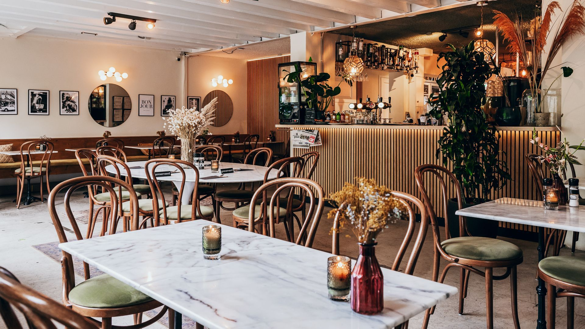
Weesperstraat 101a, Amsterdam
Van petit déjeuner tot theaterdiner.
Café brasserie in het centrum van Amsterdam. Een ontmoetingsplek voor ontbijt, een gezonde (vegan) lunch, de borrel of een diner voor de voorstelling in Carré of de Stopera.
Welkom bij Petit Lou
Petit Lou is een café brasserie in het oostelijke deel van de grachtengordel. Een plek om bij te komen met een croissant en een cappuccino, om te lunchen met collega's of om aan de borrel te gaan voordat het doek opgaat.
We werken zoveel mogelijk met lokale en eerlijke producten, voor ontbijt, lunch, borrel en diner. De koffie komt van Rum Baba, onze lokale brander uit Amsterdam. En wie vegan eet, vindt op elke kaart iets lekkers.
Een brasserie is van oudsher een plek voor een gemakkelijke maaltijd en een biertje, een kruising tussen een restaurant en een café. Zo zien wij het ook.
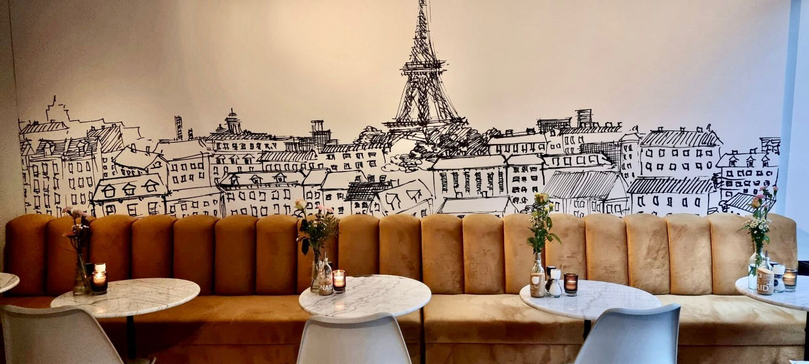
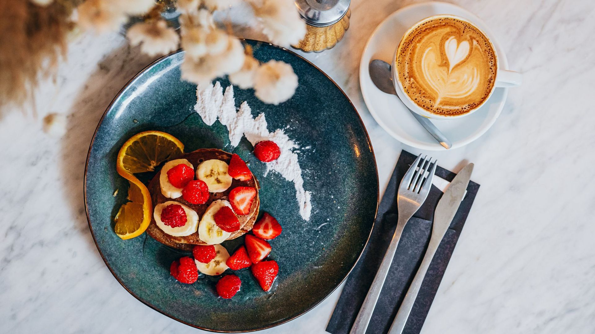
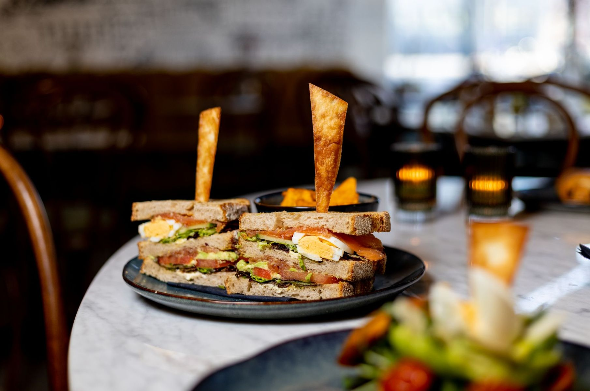
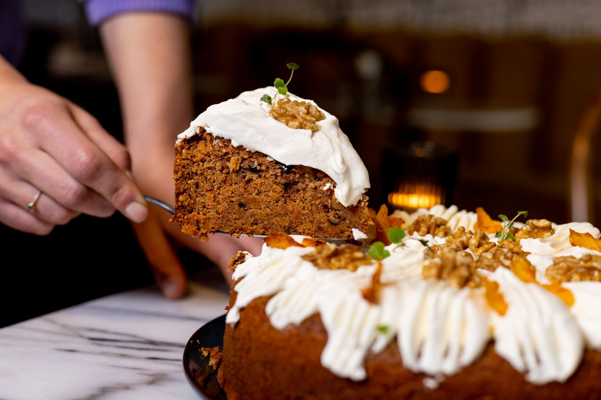
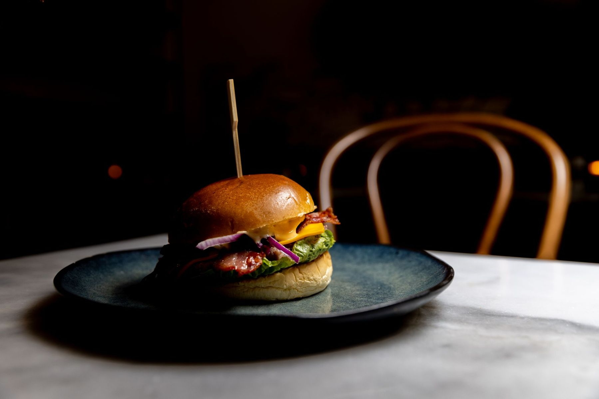
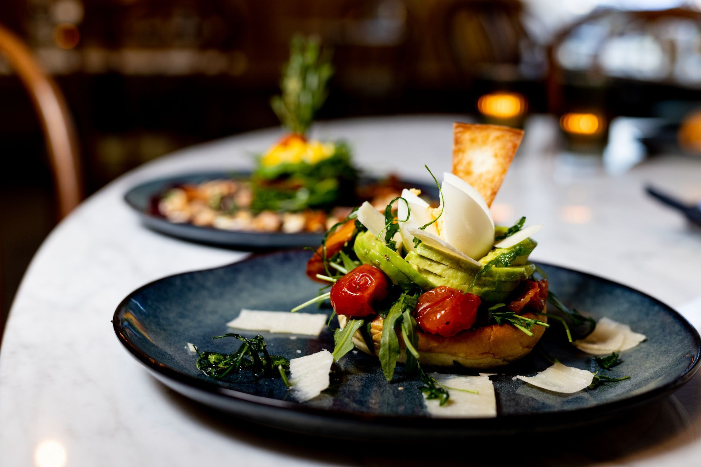
De kaart
Ontbijt en lunch tot 16.30, diner vanaf 17.00. Onze menukaart wisselt regelmatig: dit is de kaart van 2026. Heeft u een allergie of eet u glutenvrij? Vraag het ons gerust, we hebben ook glutenvrij brood.
Tot 16.30 uur. Mimosa of prosecco bij het ontbijt?
Ontbijt
- CroissantMet jam & boter of ham & kaas: 3,252,75
- Pain au chocolat3,00
- Cinnamon roll3,00
- Yoghurt, granola & vers fruitVegan optie met soja yoghurt9,50
- Petit déjeunerAmericano, croissant, boterhammen, kaas, jam, boter & gebakken ei. + Ham 1 / spek 2 / zalm 213,00
- PancakesBananen pancakes met vers fruit & siroop12,50
- WentelteefjesMet hangop, fruit, suiker & siroop. + Nutella 0,75 / slagroom 0,75 / spek 211,00
Eieren
- Eggs BenedictGepocheerd ei met ham & hollandaisesaus14,75
- Eggs NorvegienneGepocheerd ei met zalm & hollandaisesaus15,75
- Eggs FlorentineGepocheerd ei, spinazie, smashed avocado & hollandaisesaus15,75
- Just the way you like itUitsmijter, omelet, roerei of gepocheerd ei, met brood. + Kaas, tomaat of champignons 1 / avocado, zalm of spek 2 / gegrilde groente 210,00
Taarten
- Vegan bananenbrood4,75
- Vegan glutenvrije brownie5,00
- Blueberry cheesecakeMet coulis van rood fruit5,00
- Appeltaart+ Slagroom 0,754,75
Tot 16.30 uur. We hebben ook glutenvrij brood.
Club sandwich
- Lou's club sandwichKip, bacon, gebakken ei, sla, tomaat, komkommer & mayo14,50
- Weelie's smokey club sandwichGerookte zalm, rode ui, gekookt ei, avocado, sla, tomaat, komkommer & roomkaas15,50
- Eva Hoi veggie club sandwichAvocado, gegrilde groenten, sla, tomaat, komkommer & tomatenchutney13,75
Sandwiches
- Sophie sandwichBrioche bol met smashed avocado, zongedroogde tomaat, gepocheerd ei, rucola & parmezaanse kaas13,00
- Suna sandwichBrioche bol met Thaise kip kerrie, little gem, komkommer, rode ui & kerriesaus13,00
- Smeertje sandwichBrioche bol met steak, gekarameliseerde rode ui, gemengde sla, parmezaanse kaas & truffelmayo14,00
- Philine sandwich (vegan)Vegan zuurdesembrood met hummus, gemengde paddenstoelen, little gem & hoisinsaus14,00
- Annie sandwichZuurdesembrood met 2 kroketten & mosterd10,00
Zuurdesem tosti
- Croque Clément (monsieur)Met béchamelsaus, beenham, gruyère & belegen kaas9,50
- Croque Maryse (madame)Als monsieur, met spiegelei en tomaat10,50
- Spinazie & geitenkaas8,50
- Vegan feta & pompoenhummus8,50
- Gegrilde kip, avocado & kaas9,50
- Classic tosti ham/kaas7,50
- Voeg een kleine soep toe aan je tosti4,75
Salades
- Caesar saladeLittle gem, avocado, gepocheerd ei, zongedroogde tomaat, parmezaanse kaas & croutons15,00
- Caesar salade kip16,50
- Caesar salade zalm16,50
- BBQ kip saladeGemengde salade, tomaat, komkommer, gekookt ei, rode ui, BBQ kip, spek & Thaise chilisaus16,50
- Vegan linzensaladeWarme linzensalade met gegrilde groenten: rode biet, wortel, pastinaak, spruitjes, ui & zaden. + Geitenkaas & dadels 2,50 / vegan feta 2,5014,75
Wraps & soep
- Soep van de dag met broodWisselende veganistische soep7,00
- Wrap krokante kipKrokante kip met chilimayo, tomaat, parmezaanse kaas & rucola13,50
- Wrap zalmGerookte zalm, rode ui, gekookt ei, avocado, sla, tomaat, komkommer & roomkaas13,50
Burgers
- Beef burger 180 grCheddar, sla, tomaat, rode ui, bacon & Lou's special burgersaus15,75
- Beyond burger (vegan)Plantbased burger met sla, tomaat, tomatenchutney & ketchup15,75
- Chicken burgerCheddar, sla, tomaat, rode ui, bacon & Lou's special burgersaus15,75
+ Cheddar 1,50 · Franse friet & mayo 4,50 · frietje parmezaan & truffelmayo 6,75 · zoete aardappelfriet & spicy mayo 4,95 · side salade 4,50
Voor bij de borrel
- BitterballenVan Oma Bobs7,50
- Vegan bitterballen7,50
- Kaasstengels6,50
- Krokante kipstukjes7,95
- Oeuf mayonnaise7,50
- Padron pepers met parmezaanse kaas5,00
- BroodMet kruidenboter & pompoenhummus6,25
- Franse frietMet mayo4,95
- Frietje parmezaanMet truffelmayo6,75
- Zoete aardappelfrietMet spicy mayo4,95
- Bittergarnituur 'De kleine Willem'Frietje, bitterballen, kaasstengels & krokante kipstukjes17,50
Cocktails, wijn en bier van de tap staan onder Drinken.
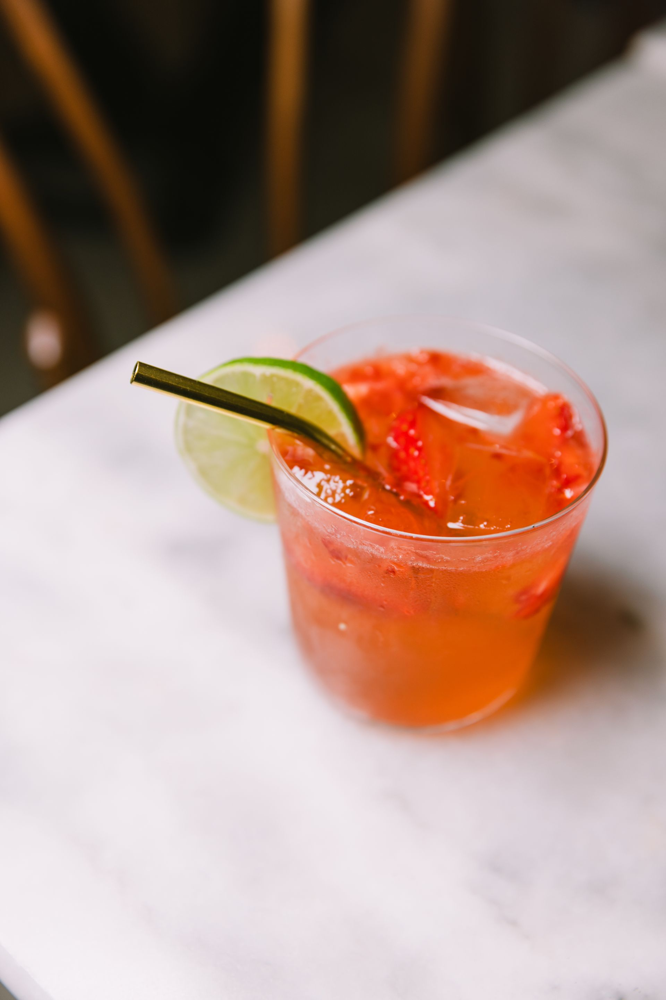
Vanaf 17.00 uur, donderdag tot en met zondag. Gaat u naar een voorstelling? Laat het ons weten bij uw reservering.
Voorgerechten
- BroodMet kruidenboter & pompoenhummus6,25
- Oeuf mayonnaise7,50
- Padron pepers met parmezaanse kaas5,00
- TartineGetoast zuurdesembrood met pesto, zongedroogde tomaat, parmezaanse kaas & basilicumblaadjes12,00
- Soep van de dag met broodWisselende veganistische soep7,00
- Prei met mosterdvinaigretteMet broodkruimels & parmezaanse kaas13,50
- Klassieke carpaccioMet truffelmayo, zongedroogde tomaat, parmezaanse kaas & rucola13,50
Hoofdgerechten
- Boeuf bourguignonMet Franse frietjes24,50
- Steak met kruidenboter23,50
- Confit de canardGekonfijte eendenbout met haricots verts & spek24,50
- Op de huid gebakken zeebaarsfiletMet beurre blanc (wittewijnsaus)24,50
- Vegan ratatouilleMet vegan mozzarella & krieltjes18,50
Alle hoofdgerechten worden geserveerd met gepofte aardappeltjes met rozemarijn & groene asperges, met uitzondering van de boeuf bourguignon. De salades en burgers van de lunchkaart kunt u ook 's avonds bestellen.
Nagerechten
- Crème brûlée8,50
- Dame blancheDrie bolletjes vanille-ijs met chocoladesaus & slagroom8,50
- Taart van het seizoenGeserveerd met citroensorbetijs9,50
- Warm chocoladelava taartje8,50
- Vegan bananenbrood4,75
- Vegan glutenvrije brownie5,00
- Blueberry cheesecakeMet coulis van rood fruit5,00
- Appeltaart4,75
- + Bolletje vanille-ijs2,00
Koffie met likeur
- Lou's coffeeMet Frangelico9,50
- French coffeeMet calvados9,50
- Irish coffeeMet Irish whiskey9,50
- Italian coffeeMet amaretto9,50
- Spanish coffeeMet Licor 43 (Cuarenta y Tres)9,50
- Espresso martiniMet wodka en koffielikeur12,00
Koffie van Rum Baba
Espresso, americano, espresso macchiato, cortado, cappuccino, latte, flat white, iced coffee en iced latte, met 1 of 2 shots. Ook met amandel-, haver- of kokosmelk. De prijzen staan op de menukaart (pdf).
- + Extra shot0,90
- + Karamel- of vanillesiroop0,75
Special latte
- Barista cacao van ReclaemTraditionele cacao met melk5,00
- Biologische chai latteKruidige Indiase thee met melk5,00
- Dirty chai latteChai latte met espresso shot5,50
- Biologische matcha latte5,50
- Pink chai latteRode biet & chai5,50
- Kinder cacao van ReclaemLicht gezoet4,50
Thee
- Verse gember-citroenthee4,50
- Verse muntthee4,50
- TheeGroen, English Breakfast, Earl Grey, rooibos of jasmijn3,45
Melk
- Glas koude melk3,00
- Koude chocomelk3,25
- Warme chocolademelk3,75
- MokkaWarme chocolademelk met een espresso shot. + Slagroom 0,754,25
Sappen & water
- Spa bruisend of plat 0,35 l3,50
- Spa bruisend of plat 0,75 l7,00
- Verse jus d'orangeGroot 5,754,25
- Biologische appelsap3,75
- SmoothieAardbei & banaan of mango & passievrucht. Groot 6,254,95
- Gembershotje4,00
Frisdranken
- KombuchaGember of yuzu5,00
- Lemon aidBloedsinaasappel, limoen of passievrucht4,25
- Ice teaSparkling lemon, still peach of green4,25
- Gemberbier4,95
- Coca-Cola, Coca-Cola Zero, Fanta, Sprite Zero3,50
- Tonic3,95
- Bitter lemon, ginger ale3,50
Bier van de tap
- Peroni0,5 liter 6,503,75
- Grolsch Weizen0,5 liter 7,504,75
- IJwit van Brouwerij 't IJ5,50
- Wisseltap5,50
Bier op fles
- Eeuwige JeugdLellebel, Gladjanus en Bullebak
- Cider Galipette5,50
- Peroni 0.03,95
- Lowlander Wit 0.05,50
- Lowlander Citrus Blond 0.05,50
Wijn glas / fles
- Pinot grigio5,25 / 24,50
- Sauvignon blanc, viognier6,00 / 28,50
- Chardonnay6,25 / 29,50
- Rosé: grenache gris, Pays d'Oc5,25 / 24,50
- Rosé: grenache noir, Provence6,25 / 29,50
- Merlot5,25 / 24,50
- Pinot noir6,25 / 29,50
- Rioja Reserva (2017)Per fles32,50
Bubbels
- Cava
- ProseccoPer fles25,95
- Kir royalPer glas7,00
- Crémant de BourgognePiccolo 8,0032,50
Cocktails glas / karaf
- Mimosa9,00 / 35,00
- Aperol spritz10,50 / 36,50
- Limoncello spritz10,50 / 36,50
- Paloma12,00 / 37,50
- Moscow, Mexican of French mule12,00 / 37,50
- Espresso martini, pornstar martini12,00
- Dark & stormy12,00
- Amaretto sour, whiskey sour12,00
- Gin tonicTanqueray London & lemon of Hendrick's & cucumber10,50
Mocktails
- DetoxCranberrysap, citroen, komkommer & Spa rood11,00
- Paloma (alcoholvrij)11,00
Gedistilleerd & likeur
Limoncello, Baileys, calvados, Disaronno amaretto, Kahlúa, Ketel 1 jenever, Ketel One vodka, Bacardi, tequila of Jameson: 5,95 per glas.
De volledige kaart als pdf: Nederlands of English.
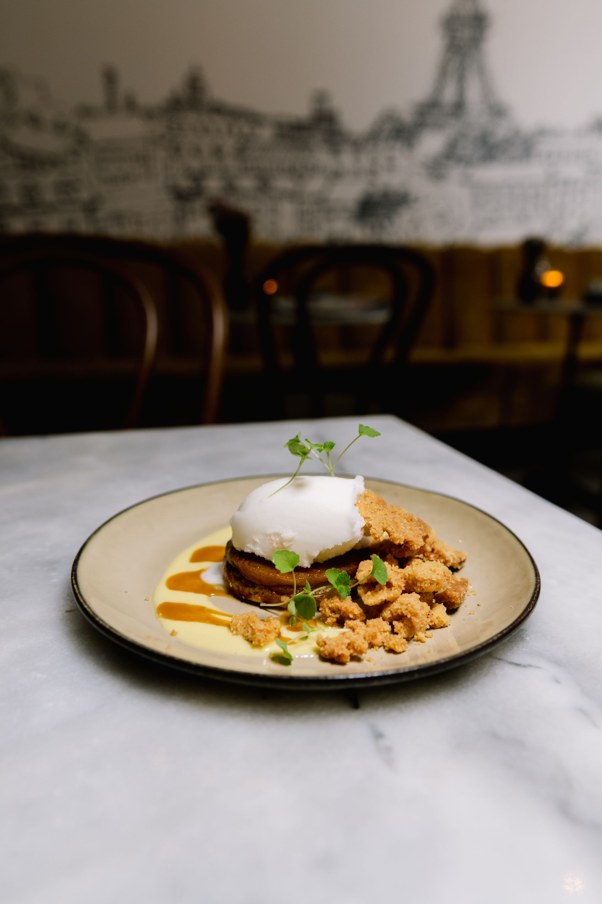
Eerst eten, dan naar de voorstelling
Koninklijk Theater Carré ligt op nog geen 350 meter van Petit Lou, aan de Amstel. Ook het Nationale Opera & Ballet in de Stopera is om de hoek. Een theaterdiner bij ons past dus precies tussen werk en voorstelling.
Diner vanaf 17.00 uur, van donderdag tot en met zondag. Zeg bij het reserveren hoe laat de voorstelling begint, dan houden we daar rekening mee.
Reserveer een tafelGroepen, borrels en vergaderingen
Ook voor uw zakelijke afspraken en groepsreserveringen kunt u bij ons terecht. Petit Lou is beschikbaar voor groepen, borrels en vergaderingen. Bel of mail gerust met uw vragen, dan denken we met u mee.
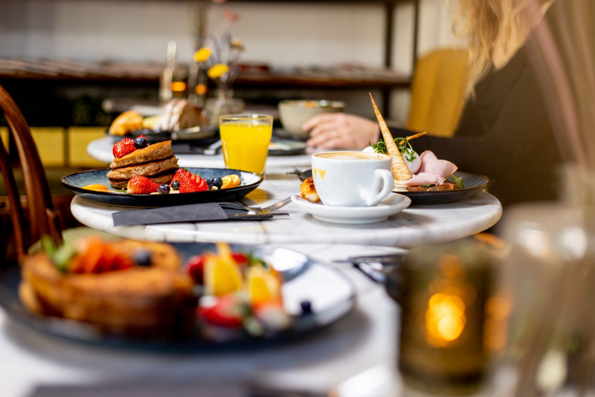
Rond Petit Lou
Petit Lou ligt in Amsterdam Centrum, in het oostelijke deel van de grachtengordel. In de Weesperbuurt en de Plantage zijn veel bezienswaardigheden te vinden, allemaal op loopafstand.
Nationaal Holocaust Namenmonument
Aan de overkant van de Weesperstraat, sinds september 2021 te bezoeken. Een ontwerp van Daniel Libeskind, met de namen van de Nederlandse slachtoffers van de Holocaust en de Porajmos die geen graf hebben.
Koninklijk Theater Carré
Op nog geen 350 meter, aan de Amstel. Eind 19e eeuw opgericht door Oscar Carré als Circus Carré, in classicistische stijl. Dagelijks voorstellingen.
Artis
De oudste dierentuin van Nederland, in de Plantagebuurt, met de ingang aan de Plantage Kerklaan.
Micropia
Onderdeel van Artis: het eerste microbenmuseum ter wereld, geopend in 2014.
Hortus Botanicus
Botanische tuin aan de Plantage Middenlaan, met meer dan zesduizend tropische en inheemse bomen en planten. De tuinen dateren uit de 17e eeuw.
Hermitage Amsterdam
Museum aan de Amstel met kunsttentoonstellingen uit diverse museale collecties.
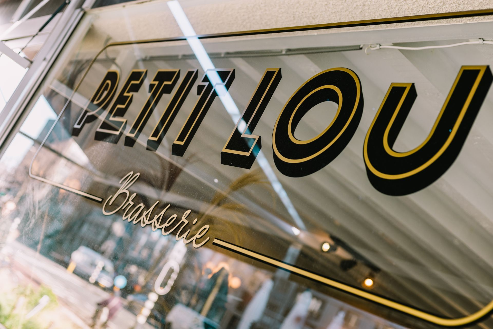
Werken bij Petit Lou
Bij Petit Lou zijn we altijd op zoek naar leuke collega's. Heb je interesse om ons team te versterken? Stuur ons een berichtje, we horen graag van je.
Mail onsReserveren & contact
Bel of mail gerust voor vragen of reserveringen, ook voor groepen.
020 775 0325
info@petitlouamsterdam.nl
Weesperstraat 101a
1018 VN Amsterdam
Openingstijden
| Maandag t/m woensdag | 8.30 – 17.00 |
|---|---|
| Donderdag en vrijdag | 8.30 – 22.30 |
| Zaterdag en zondag | 9.00 – 22.30 |
Bereikbaarheid
Petit Lou is goed bereikbaar met de metro: stations Weesperplein en Waterlooplein liggen vlakbij. Met de auto kunt u parkeren bij My Way.
Volg ons op Instagram voor updates over de wisselende kaart.